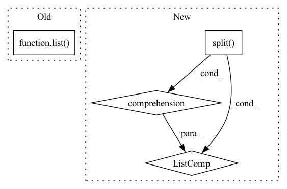

Pattern ID :17415

Before Change
find papers for a query with or operator
"""
selected_papers = self.sql_manager.search_with_OR_operator(query)
selected_papers_fnames = list(selected_papers)
return selected_papers, selected_papers_fnames
def get_papers_with_AND_operator(self, query: str) -> tuple:
"""
After Change
find papers for a query with or operator
"""
keywords = [elt.strip() for elt in re.split(regex_or_operators,query)]
selected_papers_fnames = []
selected_papers = {}
for fname in papers:
In pattern: SUPERPATTERN
Frequency: 3
Non-data size: 4
Instances
Fragment ID: 57711637
Project Name: yassinekdi/naimai
Commit Name: 5d144a0536f2fb4b056d6a2b512ecf63828c8eb3
Time: 2022-08-03
Author: keptsa@yahoo.fr
File Name: pipelines/querier.py
M Class Name: Querier
N Class Name: Querier
M Method Name: get_papers_with_OR_operator(3)
N Method Name: get_papers_with_OR_operator(2)
M Parent Class:
N Parent Class:
M File Name: pipelines/querier.py
N File Name: pipelines/querier.py
M Start Line: 91
M End Line: 92
N Start Line: 127
N End Line: 144
'>
Before Change
query_idx = list(map(lambda x: find_pattern(x[0], x[1]), zip(search_queries, input_ids.tolist())))
if isinstance(layer, list):
representations = list(map(lambda x: x[torch.arange(num_inputs)[:, None], query_idx].mean(1), hidden_states))
else:
if layer != "all":
if layer is None:
layer = self.layers
After Change
elif layer > self.layers:
raise ValueError(f"Number of layers specified ({layer}) exceed layers in model ({self.layers})!")
// representations = hidden_states[torch.arange(num_inputs)[:, None], query_idx].mean(1)
representations = torch.stack([hs.squeeze()[idx[0]:idx[1]].mean(0) for hs, idx in zip(hidden_states.split([1] * num_inputs), query_idx)])
return representations
'>
Fragment ID: 57711639
Project Name: kanishkamisra/minicons
Commit Name: b9f76e2dfc167677a5e1a4877b8bc76799a01974
Time: 2021-08-21
Author: menogetusername@gmail.com
File Name: minicons/cwe.py
M Class Name: CWE
N Class Name: CWE
M Method Name: extract_representation(3)
N Method Name: extract_representation(3)
M Parent Class: object
N Parent Class: object
M File Name: minicons/cwe.py
N File Name: minicons/cwe.py
M Start Line: 109
M End Line: 132
N Start Line: 110
N End Line: 132
'>
Before Change
find papers for a query with and operator
"""
selected_papers = self.sql_manager.search_with_AND_operator(query)
selected_papers_fnames = list(selected_papers)
return selected_papers, selected_papers_fnames
def get_papers_with_semantics(self, query: str) -> tuple:
"""
After Change
"""
find papers for a query with and operator
"""
keywords = [elt.strip() for elt in re.split(regex_and_operators,query)]
selected_papers_fnames = []
selected_papers = {}
for fname in papers:
'>
Fragment ID: 57711640
Project Name: yassinekdi/naimai
Commit Name: 5d144a0536f2fb4b056d6a2b512ecf63828c8eb3
Time: 2022-08-03
Author: keptsa@yahoo.fr
File Name: pipelines/querier.py
M Class Name: Querier
N Class Name: Querier
M Method Name: get_papers_with_AND_operator(3)
N Method Name: get_papers_with_AND_operator(2)
M Parent Class:
N Parent Class:
M File Name: pipelines/querier.py
N File Name: pipelines/querier.py
M Start Line: 99
M End Line: 100
N Start Line: 147
N End Line: 161